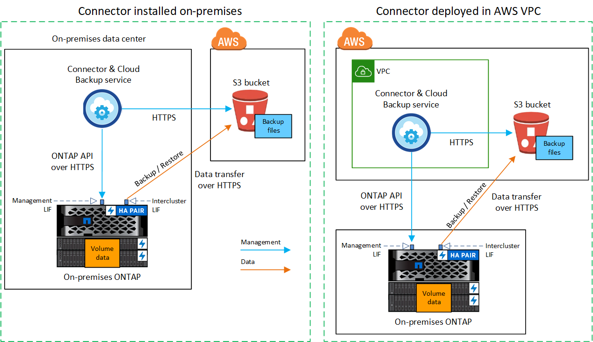
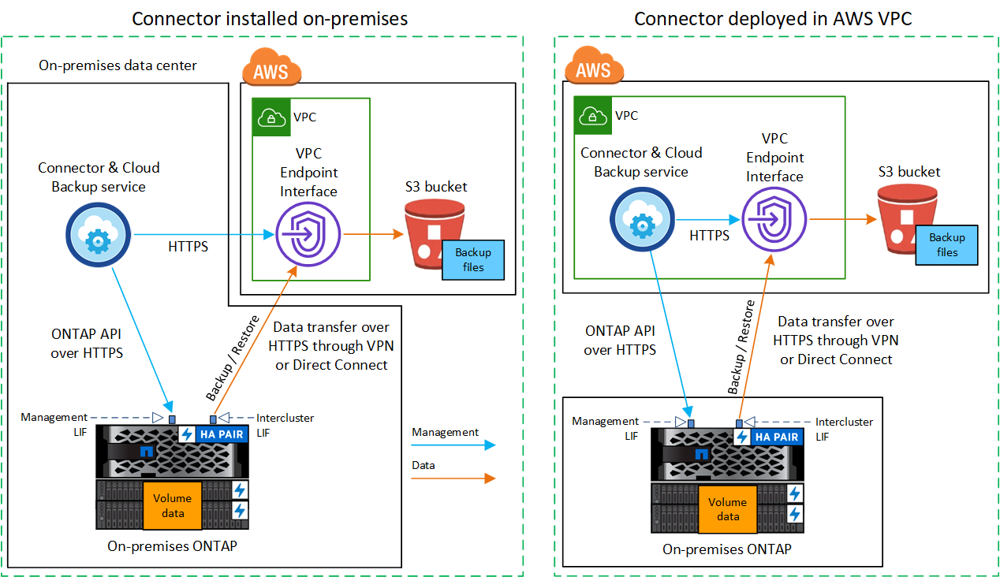
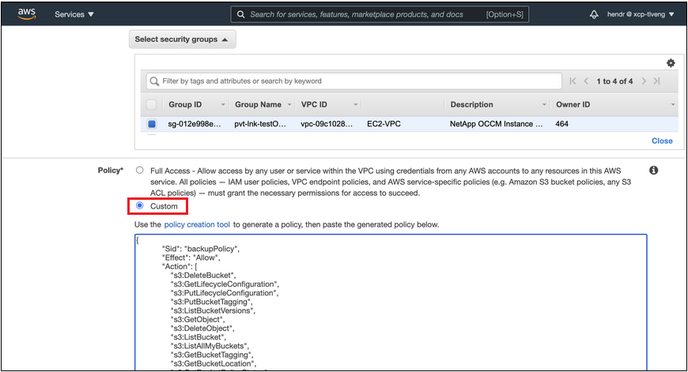
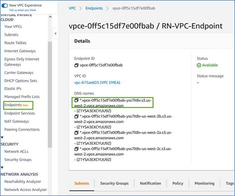
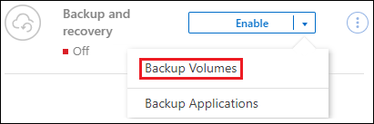
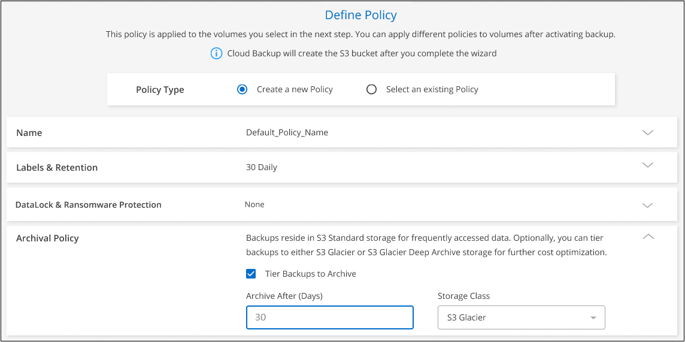
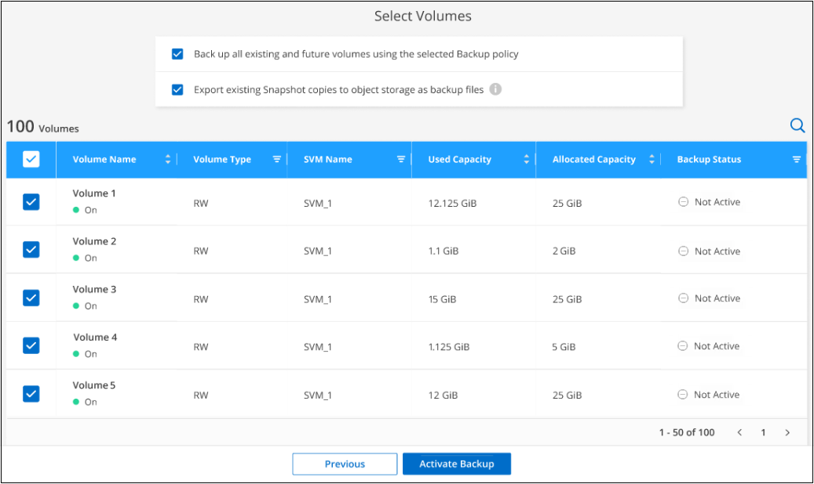

Amazon Web Services
Amazon Web Services
 Google Cloud
Google Cloud
 Microsoft Azure
Microsoft Azure
 Dokumentationsänderungen beantragen
Dokumentationsänderungen beantragen In GitHub bearbeiten
In GitHub bearbeiten Leitfaden für Beitragende
Leitfaden für BeitragendeSichern von On-Premises-ONTAP-Daten in Amazon S3
Beitragende
Unternehmen Sie einige Schritte, um den Backup von Daten von On-Premises-ONTAP-Systemen in Amazon S3 Storage zu starten.
Zu beachten ist, dass „On-Premises ONTAP Systeme“ FAS, AFF und ONTAP Select Systeme umfassen.
Schnellstart
Führen Sie die folgenden Schritte aus, um schnell zu beginnen: In den folgenden Abschnitten dieses Themas finden Sie Details zu jedem Schritt.
 Geben Sie die Konfigurationsmethode an, die Sie verwenden möchten
Geben Sie die Konfigurationsmethode an, die Sie verwenden möchtenLegen Sie fest, ob Sie Ihr ONTAP Cluster vor Ort über das öffentliche Internet direkt mit AWS S3 verbinden oder ob Sie ein VPN oder AWS Direct Connect verwenden und den Datenverkehr über eine private VPC Endpunktschnittstelle zu AWS S3 leiten möchten.
 Bereiten Sie Ihren BlueXP Connector vor
Bereiten Sie Ihren BlueXP Connector vorWenn Sie bereits einen Connector in Ihrer AWS VPC oder Ihrem Standort implementiert haben, sind Sie alle festgelegt. Ist dies nicht der Fall, müssen Sie einen Connector erstellen, um ONTAP-Daten in AWS S3 Storage zu sichern. Außerdem müssen Sie die Netzwerkeinstellungen für den Connector anpassen, damit er eine Verbindung zu AWS S3 herstellen kann.
 Vorbereiten Ihres lokalen ONTAP Clusters
Vorbereiten Ihres lokalen ONTAP ClustersErkennung des ONTAP Clusters in BlueXP, Überprüfung der Mindestanforderungen des Clusters und Anpassung der Netzwerkeinstellungen, damit die Verbindung zum AWS S3 Cluster möglich ist
 Amazon S3 als Backup-Ziel vorbereiten
Amazon S3 als Backup-Ziel vorbereitenRichten Sie Berechtigungen für den Connector ein, um den S3-Bucket zu erstellen und zu managen. Darüber hinaus müssen Berechtigungen für den On-Premises-ONTAP-Cluster eingerichtet werden, damit er Daten lesen und in den S3-Bucket schreiben kann.
Optional können Sie Ihre eigenen, von Ihnen gemanagten Schlüssel für die Datenverschlüsselung einrichten statt dazu die standardmäßigen Amazon S3-Verschlüsselungsschlüssel zu verwenden. Erfahren Sie, wie Sie Ihre AWS S3-Umgebung für den Erhalt von ONTAP-Backups vorbereiten.
 Aktivieren Sie Cloud Backup auf dem System
Aktivieren Sie Cloud Backup auf dem SystemWählen Sie die Arbeitsumgebung aus und klicken Sie auf Aktivieren > Backup Volumes neben dem Backup- und Recovery-Dienst im rechten Fenster. Anschließend können Sie im Setup-Assistenten die Standard-Backup-Richtlinie und die Anzahl der beizubehaltenden Backups festlegen und die Volumes auswählen, für die Sie ein Backup erstellen möchten.
Netzwerkdiagramme für Verbindungsoptionen
Bei der Konfiguration von Backups von On-Premises-ONTAP-Systemen in AWS S3 gibt es zwei Verbindungsmethoden.
-
Öffentliche Verbindung: Über einen öffentlichen S3-Endpunkt wird das ONTAP System direkt mit AWS S3 verbunden.
-
Private Verbindung: Verwenden Sie ein VPN oder AWS Direct Connect und leiten Sie den Datenverkehr über eine VPC-Endpunktschnittstelle mit einer privaten IP-Adresse weiter.
Das folgende Diagramm zeigt die Methode Public Connection und die Verbindungen, die Sie zwischen den Komponenten vorbereiten müssen. Sie können einen Connector, den Sie an Ihrem Standort installiert haben, oder einen Connector verwenden, den Sie in der AWS VPC implementiert haben.

Das folgende Diagramm zeigt die Methode private Verbindung und die Verbindungen, die Sie zwischen den Komponenten vorbereiten müssen. Sie können einen Connector, den Sie an Ihrem Standort installiert haben, oder einen Connector verwenden, den Sie in der AWS VPC implementiert haben.

Bereiten Sie den Konnektor vor
Der BlueXP Connector ist die Hauptsoftware für BlueXP-Funktionen. Zum Sichern und Wiederherstellen Ihrer ONTAP-Daten ist ein Connector erforderlich.
Erstellen oder Umschalten von Anschlüssen
Wenn Sie bereits einen Connector in Ihrer AWS VPC oder Ihrem Standort implementiert haben, sind Sie alle festgelegt. Falls nicht, müssen Sie an einem dieser Standorte einen Connector erstellen, um ONTAP-Daten in AWS S3 Storage zu sichern. Sie können keinen Connector verwenden, der bei einem anderen Cloud-Provider bereitgestellt wird.
-
"Installieren eines Connectors in einer AWS GovCloud Region"
Cloud Backup wird in GovCloud Regionen unterstützt, wenn der Connector in der Cloud bereitgestellt wird – und nicht, wenn er in Ihrem Unternehmen installiert ist. Darüber hinaus müssen Sie den Connector über AWS Marketplace implementieren. Sie können den Connector nicht in einer Regierungsregion von der BlueXP SaaS-Website bereitstellen.
Anforderungen für Connector-Netzwerke
-
Stellen Sie sicher, dass das Netzwerk, in dem der Connector installiert ist, folgende Verbindungen ermöglicht:
-
Eine HTTPS-Verbindung über Port 443 zum Cloud Backup Service und zum S3-Objekt-Storage ("Siehe die Liste der Endpunkte")
-
Eine HTTPS-Verbindung über Port 443 an Ihre ONTAP-Cluster-Management-LIF
-
Für AWS und AWS GovCloud Implementierungen sind zusätzliche Regeln für ein- und ausgehende Sicherheitsgruppen erforderlich. Siehe "Regeln für den Connector in AWS" Entsprechende Details.
-
-
"Stellen Sie sicher, dass der Connector über Berechtigungen zum Management des S3-Buckets verfügt".
-
Wenn Sie über eine direkte Verbindung oder eine VPN-Verbindung zwischen Ihrem ONTAP-Cluster und der VPC verfügen und die Kommunikation zwischen dem Connector und S3 im internen AWS Netzwerk verbleiben soll (eine private Verbindung), müssen Sie eine VPC Endpunkt-Schnittstelle zu S3 aktivieren. Informationen zur Einrichtung einer VPC-Endpunktschnittstelle finden Sie unter.
Bereiten Sie den ONTAP Cluster vor
Entdecken Sie Ihren ONTAP Cluster in BlueXP
Bevor Sie mit dem Backup von Volume-Daten beginnen können, müssen Sie das lokale ONTAP Cluster in BlueXP ermitteln. Sie müssen die Cluster-Management-IP-Adresse und das Passwort kennen, mit dem das Admin-Benutzerkonto den Cluster hinzufügen kann.
ONTAP-Anforderungen erfüllt
-
Minimum ONTAP 9.7P5; ONTAP 9.8P13 und höher wird empfohlen.
-
SnapMirror Lizenz (im Rahmen des Premium Bundle oder Datensicherungs-Bundles enthalten)
Hinweis: bei der Verwendung von Cloud Backup ist das „Hybrid Cloud Bundle“ nicht erforderlich.
Informieren Sie sich darüber "Management Ihrer Cluster-Lizenzen".
-
Zeit und Zeitzone sind korrekt eingestellt.
Informieren Sie sich darüber "Konfigurieren Sie die Cluster-Zeit".
Netzwerkanforderungen für Cluster
-
Das Cluster erfordert eine eingehende HTTPS-Verbindung vom Connector zur Cluster-Management-LIF.
-
Auf jedem ONTAP Node ist eine Intercluster-LIF erforderlich, die die Volumes hostet, die Sie sichern möchten. Diese Intercluster LIFs müssen in der Lage sein, auf den Objektspeicher zuzugreifen.
Das Cluster initiiert eine ausgehende HTTPS-Verbindung über Port 443 von den Intercluster-LIFs zum Amazon S3 Storage für Backup- und Restore-Vorgänge. ONTAP liest und schreibt Daten in und aus dem Objekt-Storage – der Objekt-Storage initiiert nie – er reagiert einfach darauf.
-
Die Intercluster-LIFs müssen dem IPspace zugewiesen werden, den ONTAP für die Verbindung mit dem Objekt-Storage verwenden sollte. "Erfahren Sie mehr über IPspaces".
Wenn Sie Cloud Backup einrichten, werden Sie aufgefordert, den IP-Speicherplatz zu verwenden. Sie sollten den IPspace auswählen, dem diese LIFs zugeordnet sind. Dies kann der „Standard“-IPspace oder ein benutzerdefinierter IPspace sein, den Sie erstellt haben.
Wenn Sie einen anderen IPspace als „Standard“ verwenden, müssen Sie möglicherweise eine statische Route erstellen, um Zugriff auf den Objekt-Storage zu erhalten.
Alle Intercluster-LIFs im IPspace müssen auf den Objektspeicher zugreifen können. Wenn Sie dies nicht für den aktuellen IPspace konfigurieren können, müssen Sie einen dedizierten IPspace erstellen, wo alle intercluster LIFs Zugriff auf den Objektspeicher haben.
-
DNS-Server müssen für die Storage-VM konfiguriert worden sein, auf der sich die Volumes befinden. Informieren Sie sich darüber "Konfigurieren Sie DNS-Services für die SVM".
-
Aktualisieren Sie ggf. Firewall-Regeln, um Cloud Backup-Verbindungen von ONTAP zu Objektspeicher über Port 443 und Datenverkehr zur Namensauflösung von der Storage VM zum DNS-Server über Port 53 (TCP/UDP) zu ermöglichen.
-
Wenn Sie für die S3-Verbindung einen privaten VPC-Schnittstellenendpunkt in AWS verwenden, muss das S3-Endpunktzertifikat in das ONTAP-Cluster geladen werden, damit HTTPS/443 verwendet werden kann. Informationen zum Einrichten einer VPC-Endpunkt-Schnittstelle und zum Laden des S3-Zertifikats finden Sie unter.
Lizenzanforderungen prüfen
-
Bevor Sie Cloud Backup für Ihren Cluster aktivieren können, müssen Sie entweder ein „Pay-as-you-go“-Angebot (PAYGO) mit BlueXP Marketplace von AWS abonnieren oder eine Cloud Backup BYOL-Lizenz von NetApp erwerben und aktivieren. Diese Lizenzen sind für Ihr Konto und können für mehrere Systeme verwendet werden.
-
Für die Cloud Backup-PAYGO-Lizenzierung benötigen Sie ein Abonnement für den "AWS BlueXP Marketplace Angebot" Für Cloud-Backup. Die Abrechnung für Cloud Backup erfolgt über dieses Abonnement.
-
Für die BYOL-Lizenzierung von Cloud Backup benötigen Sie die Seriennummer von NetApp, mit der Sie den Service für die Dauer und die Kapazität der Lizenz nutzen können. "Erfahren Sie, wie Sie Ihre BYOL-Lizenzen managen".
-
-
Sie benötigen ein AWS Abonnement für den Objekt-Storage, an dem sich Ihre Backups befinden.
Backups von On-Premises-Systemen zu Amazon S3 lassen sich in allen Regionen erstellen "Wobei Cloud Volumes ONTAP unterstützt wird"; Einschließlich Regionen von AWS GovCloud. Sie geben die Region an, in der Backups beim Einrichten des Dienstes gespeichert werden sollen.
Bereiten Sie die AWS-Umgebung vor
Richten Sie S3-Berechtigungen ein
Sie müssen zwei Berechtigungssätze konfigurieren:
-
Berechtigungen für den Connector zum Erstellen und Managen des S3-Buckets.
-
Berechtigungen für den On-Premises-ONTAP-Cluster, damit er Daten lesen und in den S3-Bucket schreiben kann
-
Vergewissern Sie sich, dass die folgenden S3-Berechtigungen (von neuestem) vorliegen "BlueXP-Richtlinie") Sind Teil der IAM-Rolle, die den Connector mit Berechtigungen versorgt.
{ "Sid": "backupPolicy", "Effect": "Allow", "Action": [ "s3:DeleteBucket", "s3:GetLifecycleConfiguration", "s3:PutLifecycleConfiguration", "s3:PutBucketTagging", "s3:ListBucketVersions", "s3:GetObject", "s3:DeleteObject", "s3:PutObject", "s3:ListBucket", "s3:ListAllMyBuckets", "s3:GetBucketTagging", "s3:GetBucketLocation", "s3:GetBucketPolicyStatus", "s3:GetBucketPublicAccessBlock", "s3:GetBucketAcl", "s3:GetBucketPolicy", "s3:PutBucketPolicy", "s3:PutBucketOwnershipControls", "s3:PutBucketPublicAccessBlock", "s3:PutEncryptionConfiguration", "s3:GetObjectVersionTagging", "s3:GetBucketObjectLockConfiguration", "s3:GetObjectVersionAcl", "s3:PutObjectTagging", "s3:DeleteObjectTagging", "s3:GetObjectRetention", "s3:DeleteObjectVersionTagging", "s3:PutBucketObjectLockConfiguration", "s3:ListBucketByTags", "s3:DeleteObjectVersion", "s3:GetObjectTagging", "s3:PutBucketVersioning", "s3:PutObjectVersionTagging", "s3:GetBucketVersioning", "s3:BypassGovernanceRetention", "s3:PutObjectRetention", "s3:GetObjectVersion", "athena:StartQueryExecution", "athena:GetQueryResults", "athena:GetQueryExecution", "glue:GetDatabase", "glue:GetTable", "glue:CreateTable", "glue:CreateDatabase", "glue:GetPartitions", "glue:BatchCreatePartition", "glue:BatchDeletePartition" ], "Resource": [ "arn:aws:s3:::netapp-backup-*" ] },Wenn Sie den Connector mit Version 3.9.21 oder höher bereitgestellt haben, sollten diese Berechtigungen bereits Teil der IAM-Rolle sein. Andernfalls müssen Sie die fehlenden Berechtigungen hinzufügen. Insbesondere die "athena" und "Leim" Berechtigungen, wie sie für die Suche und Wiederherstellung erforderlich sind. Siehe "AWS Dokumentation: Bearbeiten der IAM-Richtlinien".
-
Wenn Sie den Dienst aktivieren, werden Sie vom Backup-Assistenten aufgefordert, einen Zugriffsschlüssel und einen geheimen Schlüssel einzugeben. Diese Anmeldedaten werden an den ONTAP-Cluster weitergeleitet, damit ONTAP Daten im S3-Bucket sichern und wiederherstellen kann. Dazu müssen Sie einen IAM-Benutzer mit den folgenden Berechtigungen erstellen:
{ "Version": "2012-10-17", "Statement": [ { "Action": [ "s3:GetObject", "s3:PutObject", "s3:DeleteObject", "s3:ListBucket", "s3:ListAllMyBuckets", "s3:GetBucketLocation", "s3:PutEncryptionConfiguration" ], "Resource": "arn:aws:s3:::netapp-backup-*", "Effect": "Allow", "Sid": "backupPolicy" } ] } { "Version": "2012-10-17", "Statement": [ { "Action": [ "s3:ListBucket", "s3:GetBucketLocation" ], "Resource": "arn:aws:s3:::netapp-backup*", "Effect": "Allow" }, { "Action": [ "s3:GetObject", "s3:PutObject", "s3:DeleteObject", "s3:ListAllMyBuckets", "s3:PutObjectTagging", "s3:GetObjectTagging", "s3:RestoreObject", "s3:GetBucketObjectLockConfiguration", "s3:GetObjectRetention", "s3:PutBucketObjectLockConfiguration", "s3:PutObjectRetention" ], "Resource": "arn:aws:s3:::netapp-backup*/*", "Effect": "Allow" } ] }Siehe "AWS Documentation: Erstellen einer Rolle zum Delegieren von Berechtigungen an einen IAM-Benutzer" Entsprechende Details.
Vom Kunden verwaltete AWS Schlüssel zur Datenverschlüsselung einrichten
Falls Sie die standardmäßigen Amazon S3-Verschlüsselungsschlüssel verwenden möchten, um die Daten zu verschlüsseln, die zwischen Ihrem On-Premises-Cluster und dem S3-Bucket übergeben wurden, sind die Daten für die Standardinstallation über diesen Verschlüsselungstyp festgelegt.
Wenn Sie Ihre eigenen, vom Kunden gemanagten Schlüssel zur Datenverschlüsselung verwenden möchten, statt die Standardschlüssel zu verwenden, müssen Sie die über die Verschlüsselung gemanagten Schlüssel bereits eingerichtet haben, bevor Sie den Cloud Backup Wizard starten. "Sehen Sie, wie Sie Ihre eigenen Schlüssel verwenden".
Konfigurieren Sie Ihr System für eine private Verbindung mithilfe einer VPC-Endpunktschnittstelle
Wenn Sie eine standardmäßige öffentliche Internetverbindung nutzen möchten, werden alle Berechtigungen vom Connector festgelegt und es gibt nichts anderes, was Sie tun müssen. Diese Art der Verbindung wird im angezeigt "Erstes Diagramm".
Wenn Sie eine sicherere Verbindung über das Internet von Ihrem On-Prem-Rechenzentrum zur VPC haben möchten, gibt es eine Option, eine AWS PrivateLink-Verbindung im Backup-Aktivierungs-Assistenten auszuwählen. Wenn Sie ein VPN oder AWS Direct Connect verwenden möchten, ist es erforderlich, das On-Premises-System über eine VPC-Endpunktschnittstelle, die eine private IP-Adresse verwendet, zu verbinden. Diese Art der Verbindung wird im angezeigt "Zweites Diagramm".
-
Konfiguration eines Schnittstellenendpunkts über die Amazon VPC Konsole oder die Befehlszeile erstellen. "Weitere Informationen zur Verwendung von AWS PrivateLink für Amazon S3 finden Sie unter".
-
Ändern Sie die Konfiguration der Sicherheitsgruppe, die dem BlueXP Connector zugeordnet ist. Sie müssen die Richtlinie in „Benutzerdefiniert“ (von „Vollzugriff“) ändern und müssen Fügen Sie die S3-Berechtigungen aus der Backup-Richtlinie hinzu Wie bereits dargestellt.

Wenn Sie Port 80 (HTTP) für die Kommunikation mit dem privaten Endpunkt verwenden, sind Sie alle festgelegt. Sie können jetzt Cloud-Backup auf dem Cluster aktivieren.
Wenn Sie Port 443 (HTTPS) für die Kommunikation zum privaten Endpunkt verwenden, müssen Sie das Zertifikat aus dem VPC S3-Endpunkt kopieren und zum ONTAP-Cluster hinzufügen, wie in den nächsten 4 Schritten dargestellt.
-
Ermitteln Sie den DNS-Namen des Endpunkts über die AWS Konsole.

-
Beziehen des Zertifikats vom VPC-S3-Endpunkt Dies tun Sie durch "Anmelden bei der VM, die den BlueXP Connector hostet" Und Ausführen des folgenden Befehls. Wenn Sie den DNS-Namen des Endpunkts eingeben, fügen Sie „Eimer“ zum Anfang hinzu und ersetzen das „*“:
[ec2-user@ip-10-160-4-68 ~]$ openssl s_client -connect bucket.vpce-0ff5c15df7e00fbab-yxs7lt8v.s3.us-west-2.vpce.amazonaws.com:443 -showcerts -
Aus der Ausgabe dieses Befehls kopieren Sie die Daten für das S3-Zertifikat (alle Daten zwischen und einschließlich DER START-/END-ZERTIFIKAT-Tags):
Certificate chain 0 s:/CN=s3.us-west-2.amazonaws.com` i:/C=US/O=Amazon/OU=Server CA 1B/CN=Amazon -----BEGIN CERTIFICATE----- MIIM6zCCC9OgAwIBAgIQA7MGJ4FaDBR8uL0KR3oltTANBgkqhkiG9w0BAQsFADBG … … GqvbOz/oO2NWLLFCqI+xmkLcMiPrZy+/6Af+HH2mLCM4EsI2b+IpBmPkriWnnxo= -----END CERTIFICATE----- -
Melden Sie sich bei der ONTAP Cluster CLI an und wenden Sie das mit dem folgenden Befehl kopierte Zertifikat an (ersetzen Sie Ihren eigenen Storage-VM-Namen):
cluster1::> security certificate install -vserver cluster1 -type server-ca Please enter Certificate: Press <Enter> when done
Cloud Backup Aktivieren
Cloud Backup kann jederzeit direkt aus der lokalen Arbeitsumgebung aktiviert werden.
-
Wählen Sie in der Arbeitsfläche die Arbeitsumgebung aus und klicken Sie auf Aktivieren > Backup Volumes neben dem Backup- und Recovery-Service im rechten Fenster.
Wenn das Amazon S3 Ziel für Ihre Backups als Arbeitsumgebung auf dem Canvas existiert, können Sie den Cluster auf die Amazon S3-Arbeitsumgebung ziehen, um den Setup-Assistenten zu starten.

-
Wählen Sie Amazon Web Services als Anbieter und klicken Sie auf Weiter.
-
Geben Sie die Provider-Daten ein und klicken Sie auf Weiter.
-
AWS-Konto, AWS-Zugriffsschlüssel und der zum Speichern der Backups verwendete geheime Schlüssel.
Der Zugriffsschlüssel und der geheime Schlüssel gelten für den von Ihnen erstellten IAM-Benutzer, um dem ONTAP-Cluster Zugriff auf den S3-Bucket zu geben.
-
Der Region AWS, in der die Backups gespeichert werden.
-
Unabhängig davon, ob Sie die standardmäßigen Amazon S3-Verschlüsselungsschlüssel verwenden oder Ihre eigenen, von Kunden gemanagten Schlüssel über Ihr AWS Konto auswählen, um die Verschlüsselung Ihrer Daten zu managen. ("Sehen Sie, wie Sie Ihre eigenen Schlüssel verwenden").

-
-
Wenn Sie für Ihr Konto keine Lizenz für Cloud Backup besitzen, werden Sie zu diesem Zeitpunkt aufgefordert, die gewünschte Gebührenart auszuwählen. Sie können ein Prepaid-Marketplace-Angebot (PAYGO) für BlueXP Marketplace von AWS (oder bei mehreren Abonnements eine auswählen) abonnieren oder eine Cloud Backup BYOL-Lizenz von NetApp erwerben und aktivieren. "Erfahren Sie, wie Sie Cloud Backup-Lizenzen einrichten."
-
Geben Sie die Netzwerkdaten ein und klicken Sie auf Weiter.
-
Der IPspace im ONTAP Cluster, in dem sich die Volumes, die Sie sichern möchten, befinden. Die Intercluster-LIFs für diesen IPspace müssen über Outbound-Internetzugang verfügen.
-
Wählen Sie optional aus, ob Sie einen AWS PrivateLink verwenden möchten, den Sie zuvor konfiguriert haben. "Weitere Informationen zur Verwendung von AWS PrivateLink für Amazon S3 finden Sie unter".

-
-
Geben Sie die Backup Policy Details ein, die für Ihre Standard Policy verwendet werden, und klicken Sie auf Weiter. Sie können eine vorhandene Richtlinie auswählen oder eine neue Richtlinie erstellen, indem Sie in den einzelnen Abschnitten Ihre Auswahl eingeben:
-
Geben Sie den Namen für die Standardrichtlinie ein. Sie müssen den Namen nicht ändern.
-
Legen Sie den Backup-Zeitplan fest und wählen Sie die Anzahl der zu behaltenden Backups aus. "Die Liste der vorhandenen Richtlinien, die Sie auswählen können, wird angezeigt".
-
Optional können Sie bei Verwendung von ONTAP 9.11.1 und höher Ihre Backups vor dem Löschen und Ransomware-Angriffen schützen, indem Sie eine der Einstellungen DataLock und Ransomware Protection konfigurieren. DataLock schützt Ihre Backup-Dateien vor Modified oder Deleted, und Ransomware Protection scannt Ihre Backup-Dateien, um nach Anzeichen für einen Ransomware-Angriff in Ihren Backup-Dateien zu suchen. "Erfahren Sie mehr über die verfügbaren DataLock-Einstellungen".
-
Wenn Sie ONTAP 9.10.1 und höher einsetzen, können Sie optional nach einer bestimmten Anzahl von Tagen Backups entweder auf S3 Glacier oder in S3 Glacier Deep Archive Storage abstufen, um die Kosten weiter zu optimieren. "Erfahren Sie mehr über die Verwendung von Archivierungs-Tiers".

Wichtig: Wenn Sie DataLock verwenden möchten, müssen Sie es bei der Aktivierung von Cloud Backup in Ihrer ersten Richtlinie aktivieren.
-
-
Wählen Sie auf der Seite Volumes auswählen die Volumes aus, für die ein Backup mit der definierten Backup-Richtlinie gesichert werden soll. Falls Sie bestimmten Volumes unterschiedliche Backup-Richtlinien zuweisen möchten, können Sie später zusätzliche Richtlinien erstellen und auf diese Volumes anwenden.
-
Um alle bestehenden Volumes und Volumes zu sichern, die in der Zukunft hinzugefügt wurden, markieren Sie das Kontrollkästchen „Alle bestehenden und zukünftigen Volumen sichern…“. Wir empfehlen diese Option, damit alle Ihre Volumes gesichert werden und Sie nie vergessen müssen, Backups für neue Volumes zu aktivieren.
-
Um nur vorhandene Volumes zu sichern, aktivieren Sie das Kontrollkästchen in der Titelzeile (
 ).
). -
Um einzelne Volumes zu sichern, aktivieren Sie das Kontrollkästchen für jedes Volume (
 ).
).
-
Wenn es lokale Snapshot-Kopien für Lese-/Schreib-Volumes in dieser Arbeitsumgebung gibt, die dem Backup-Schedule-Label entsprechen, das Sie gerade für diese Arbeitsumgebung ausgewählt haben (z. B. täglich, wöchentlich usw.), wird eine zusätzliche Eingabeaufforderung angezeigt: „Export vorhandener Snapshot Kopien in Objekt-Storage als Backup-Kopien“. Aktivieren Sie dieses Kontrollkästchen, wenn alle historischen Snapshots als Backup-Dateien in Objekt-Storage kopiert werden sollen, um sicherzustellen, dass die umfassendste Sicherung für Ihre Volumes gewährleistet ist.
-
-
Klicken Sie auf Activate Backup und Cloud Backup beginnt mit der Erstellung der ersten Backups Ihrer Volumes.
Ein S3-Bucket wird automatisch in dem Service-Konto erstellt, das durch den S3-Zugriffsschlüssel und den eingegebenen Geheimschlüssel angegeben ist und die Backup-Dateien dort gespeichert werden. Das Dashboard für Volume Backup wird angezeigt, sodass Sie den Status der Backups überwachen können. Sie können den Status von Backup- und Wiederherstellungsjobs auch mit dem überwachen "Fenster Job-Überwachung".
Was kommt als Nächstes?
-
Das können Sie "Management von Backup Files und Backup-Richtlinien". Dies umfasst das Starten und Stoppen von Backups, das Löschen von Backups, das Hinzufügen und Ändern des Backup-Zeitplans und vieles mehr.
-
Das können Sie "Management von Backup-Einstellungen auf Cluster-Ebene". Dies umfasst die Änderung der Storage-Schlüssel, die ONTAP für den Zugriff auf den Cloud-Storage verwendet, die Änderung der verfügbaren Netzwerkbandbreite für das Hochladen von Backups in den Objekt-Storage, die Änderung der automatischen Backup-Einstellung für zukünftige Volumes und vieles mehr.
-
Das können Sie auch "Wiederherstellung von Volumes, Ordnern oder einzelnen Dateien aus einer Sicherungsdatei" Zu einem Cloud Volumes ONTAP System in AWS oder zu einem ONTAP System vor Ort